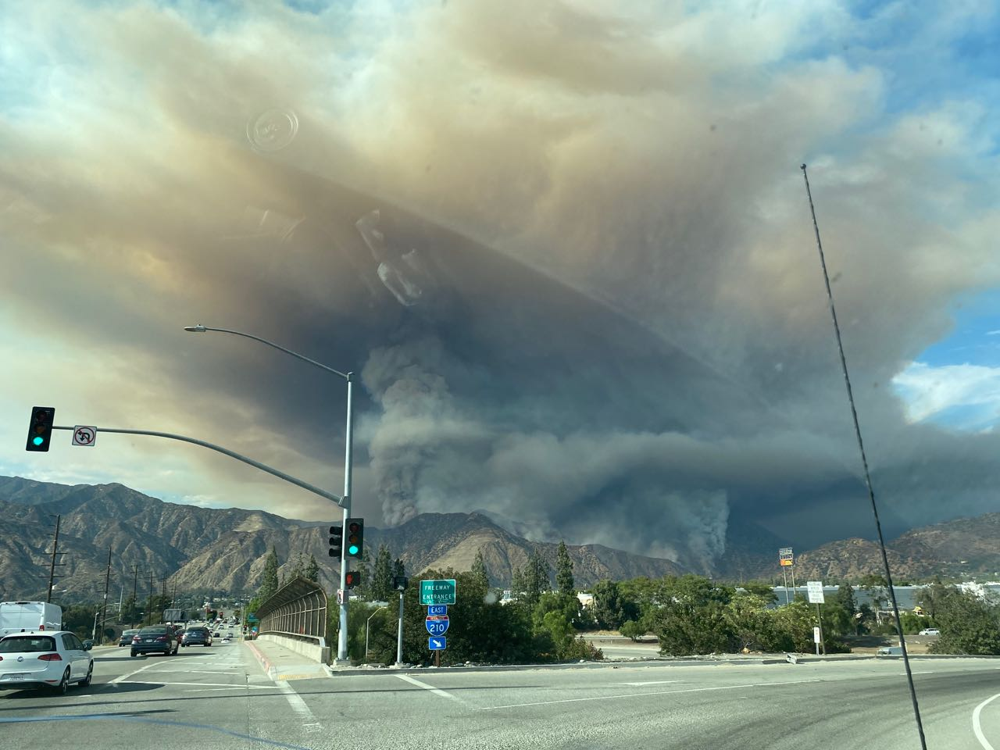
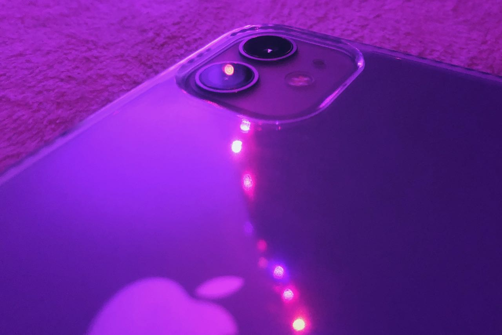
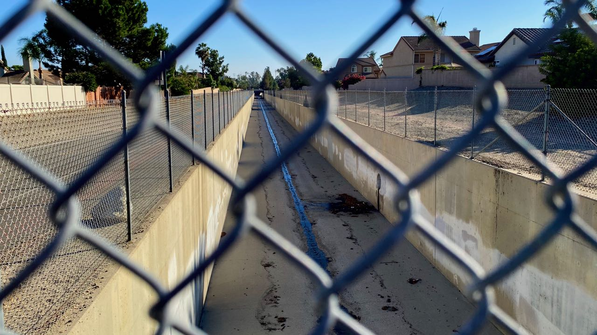
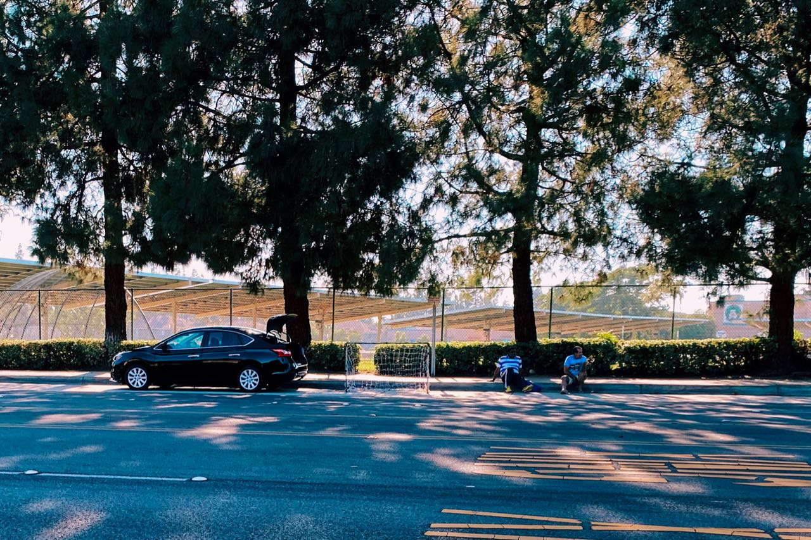
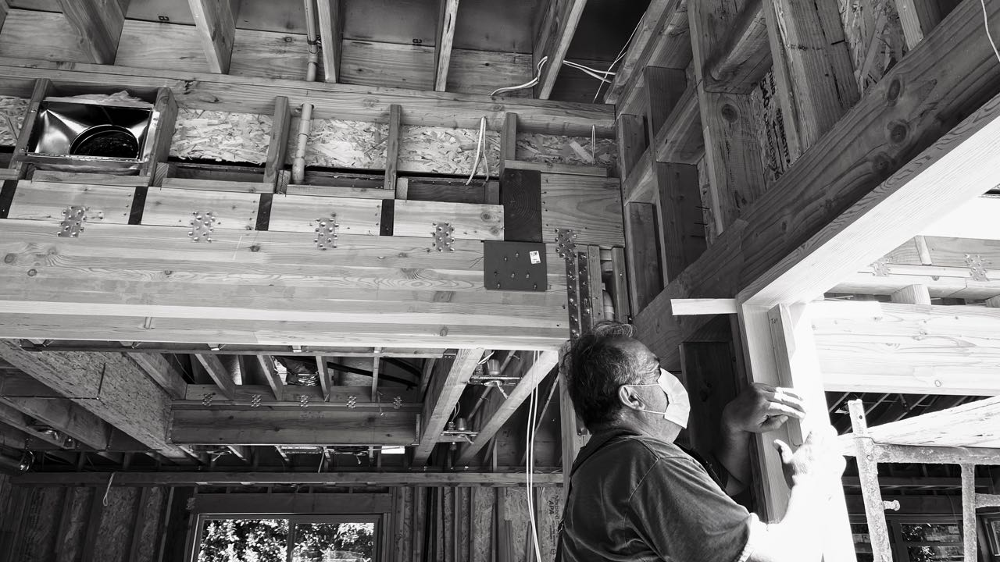
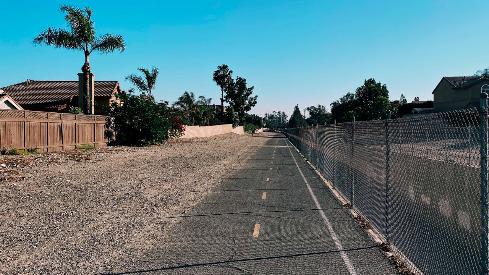
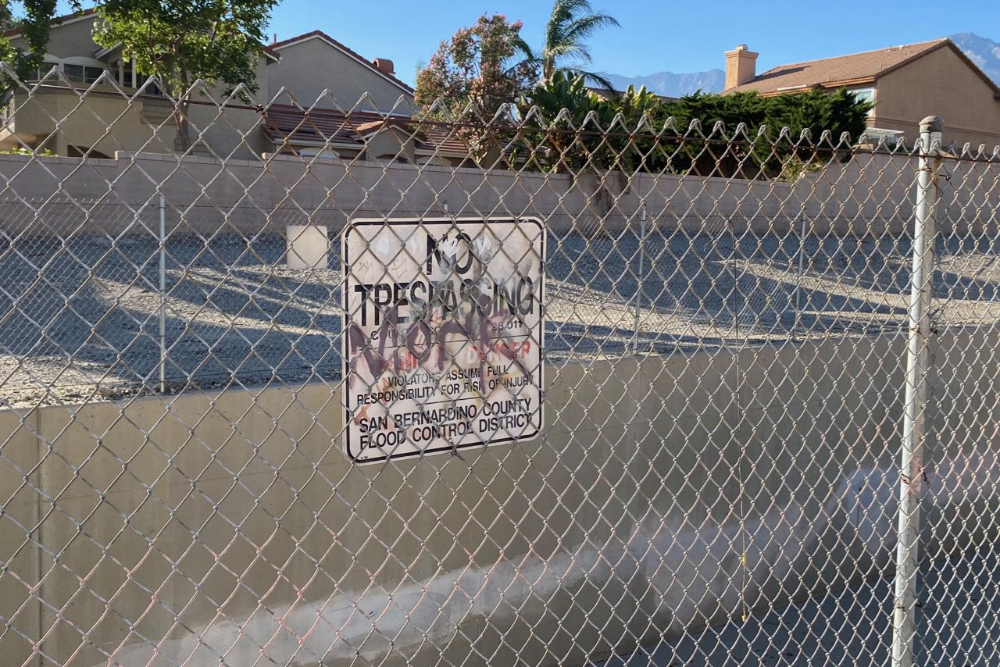
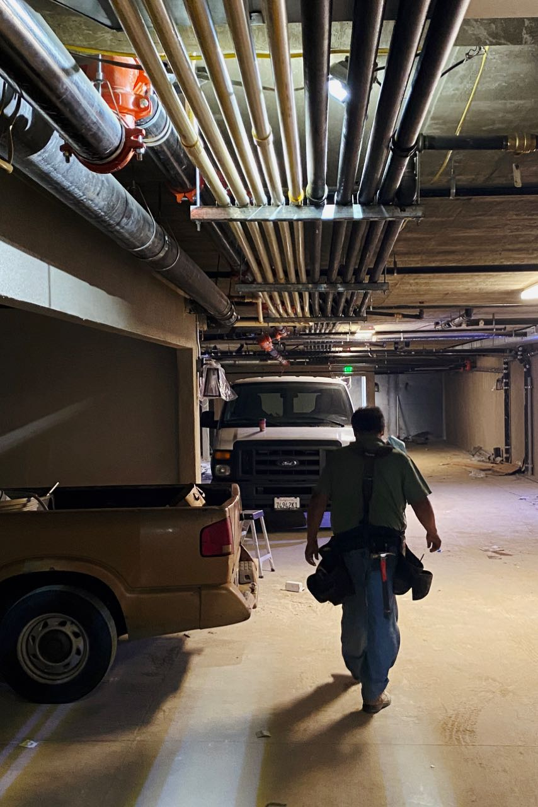

Darkroom Diary: iPhone Photography, and Finding Photography Again
editors note: lol. lmao. this is cute past emma. where you’re going, you dont need pixels.
I was very into photography a few years ago. Decent DSLR, lenses, accessories, the whole deal. But for various reasons my love of photography left me. The camera was too heavy to bring, I wasn’t good enough, and I had some personal reasons. So I kinda stopped photography. The DSLR was sold off. My film camera is in a box somewhere. It all just… stopped.
That changed when I got my iPhone 11.
 Ranch Fire in Socal 2020
Swapping to this phone, it genuinely feels like I can just pull my phone out and get the shot I want. My phone feels like a standalone camera while in the camera app. AND I HAVE A WIDE ANGLE LENS. Sure your 300mm lens is cool, a nifty 50mm is a delight to shoot with, but give me something under 24mm any day. And the wide angle is a 13mm equivalent. Yes. Please.
Lemme go over the specs real quick before I get into why I’m going back to shooting.
Camera Specs⌗
 Taken with iPhone 10
The iPhone 11 has two cameras in it. The 11 Pro has three. The regular camera is a 12MP 26mm equivalent, the wide angle is a 13mm equivalent, and the telephoto in the Pro is a 52mm equivalent. All with built in optical stabilization.
But specs are just specs. My DSLR from a few years ago had a higher pixel count, better autofocus, and was APS-C so I didn’t have to rely on software tricks to get things like Bokeh or shallow depth of field. It was a better camera spec wise. But there’s a reason I’m taking more pictures with my phone now than I did with my DSLR back then.
Shoot with the Camera you Have⌗

This is the first advice you will receive as a photographer. The best camera in the world is the one you have with you. It doesn’t matter if you own multi-thousand dollar cameras and lenses, if your camera is stuck at home and you miss shots, that gear might as well not exist. This obviously is a particularly strong pro to the iPhone, since basically no one leaves their home without their phone anymore. And this isn’t just a plus for the iPhone, almost any phone camera is able to take phenomenal photos
But beyond that, the iPhone 11 allowing me to have essentially two different lenses to get different shots allows me to take pictures I otherwise wouldn’t. There’s no need to think “do I need to bring my 12mm and my 35mm” if I have both right in my pocket. And in general, no matter where I go I don’t need to feel bad about leaving my big camera at home if I have something in my pocket for almost any situation.
Does it Bring Joy⌗
The thing is, most of that last section could apply to my iPhone 7. Why didn’t I shoot on my 7 and why did my 11 get me to shoot.

It goes back to another topic that comes up time and again with cameras. Is it a joy to shoot? The reason people shoot film, or spend thousands on lenses, or buy point and shoots when their big cameras would shoot better, is because they like shooting with that gear. If you enjoy taking pictures, you’ll take more picture.
The iPhone 7 was not a joy to shoot on. At one point is was a great camera. But that phone is now 4 years old. The processor is showing its age and it wasn’t seamless to take pictures. The screen wasn’t anything to write home about. There were some shots that came out great, but the limitations of the camera made it so I felt like I missed more shots than I took. Tracking pictures felt like a chore.
But now I got the iPhone 11. And it’s a hell of a difference. The camera is a joy to shoot. Having the extra wide angle lens opens so many shots up to me. And I feel like I’m working with the strengths of the camera, not against its limitations.

Part of the joy of taking pictures for me is the edit process, believe it or not. Going through photos, finding the great shots in between all the trash, and making them shine just fills me so much. But on the iPhone 7, the screen was small enough and my eyes bad enough that I never wanted to edit on there. And by the time I was on my desktop or laptop, the photos never made their way into Lightroom and never got done.
Two things have changed that for me. One being the new nicer screen. The other being finding Darkroom, a phenomenal Lightroom alternative that works with iCloud. It’s nice to be able to walk around, take pictures, and edit the pictures while stopping for coffee. The immediacy of taking a picture, and being able to edit it on phone to show its true potential is so huge for me.
A Strange Turn in Life⌗
Of course, gear isn’t the only thing that matters. I could have gotten any piece of camera gear that could have revived my love for photos right now. And if I would have gotten this phone six months ago, I doubt I’d have gotten back into photography. So what changed?
I don’t know. A lot and nothing at all? It’s hard to say.

I mean, it’s hard to talk about anything happening in 2020 without talking about the pandemic. I loved going out and discovering new things. Odds are if you’re reading this and know me you know I have a band. My band was playing gigs essentially monthly. I had a full life and was starting to be happy. Then pandemic. And after 6+ months locked up, I’ve gotten to appreciating my experiences, and now have a deep need to document it all because I now know how fragile the whole thing really was.
On top of that, I played “Life is Strange” and it brought me back to when I considered myself a photographer, when I most cared. It was my freshmen year of college, I was in dorms alone for the first time in my life and I didn’t have a direction that I was certain in. And I remembered that feeling of looking through a viewfinder and in a way finding myself every time, how that helped me then. And how I really need that help now.
And I have a supportive partner. The most supportive partner when it comes to hobbies. And that opened my eyes to why I quit before. When I was last taking pictures, I honestly had no one to share the hobby with. I had one person who also liked photography, but they ended up believing their way of shooting was the “right” way and would belittle my photos to the point where I genuinely started having anxiety using my camera around them. But this person is in the past, and I’m working to make sure they don’t affect me.
And honestly, having someone believe in what you’re doing matters a lot. Being an artist can get lonely. It’s hard to talk about your hobbies when people don’t see things the way you do. Everyone has a phone in their pockets with a good camera. But most people don’t think of their shots past putting the subject in the middle of the frame. People aren’t into photography like they’re into music, they won’t talk about their favorite photog like they will their favorite artist, even though most people nowadays take pics daily. Forget things like lenses and f-stops and lenses. Peoples eyes glaze over the moment that comes up. That gap can make being a photographer hard. Having someone you can share your photos with ends up completely opening up the he world of photography.
Going out to Shoot⌗

So what now. I wrote a ton of words about liking taking pictures. But anyone can write words on the internet. Some people even make money through writing words on the internet. For the first time in like 5 years, I went out just to shoot. But one shoot doesn’t make me a photographer.
Every picture in this blog post was shot on my iPhone 11 and edited in Darkroom (except the pics of the iPhone 11, taken on an iPhone 10). And I am setting myself a goal to photograph and post something interesting once a week. I don’t know how much I’ll be able to because pandemic but it’s a start.

I’m also planning on digging up my Yashica Electro 35 film camera and my Olympus Micro 4/3 camera. As much as I love shooting on my phone, having a dedicated camera is a different experience and one I love. I want to develop film and explore aspects of photography I never got to. I never took portraits. I never just walked around an urban area to do pure street photography. I never sat and took a proper landscapes. I have so much room to explore in photography.
I found that sense of adventure again. And I’m going to do my best to never lose it again.